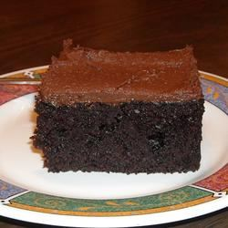

Black Chocolate Cake

Not much has to be said about this classic dessert recipe. If you don't
know
what chocolate cake is... You're gonna learn today.
Ingredients and Instructions are as follows:
Ingredients
- 2 cups all-purpose flour
- 2 cups white sugar
- 2 teaspoons baking soda
- 2 teaspoons baking powder
- 1 cup unsweetened cocoa powder
- 1 pinch salt
- ⅔ cup shortening
- 2 cups boiling water
- 2 large eggs eggs, beaten
- 2 teaspoons vanilla extract
Instructions
-
Preheat oven to 350 degrees F (175 degrees C). Grease and flour a 9x13
inch pan. Sift
together the flour, sugar, baking soda, baking powder, cocoa and salt.
Set aside.
-
Melt the shortening in the boiling water, then stir into the flour
mixture until blended.
Beat in the eggs, then stir in the vanilla.
-
Pour batter into prepared pan. Bake in the preheated oven for 30
minutes, or until a
toothpick inserted into the center of the cake comes out clean. Allow
to cool.